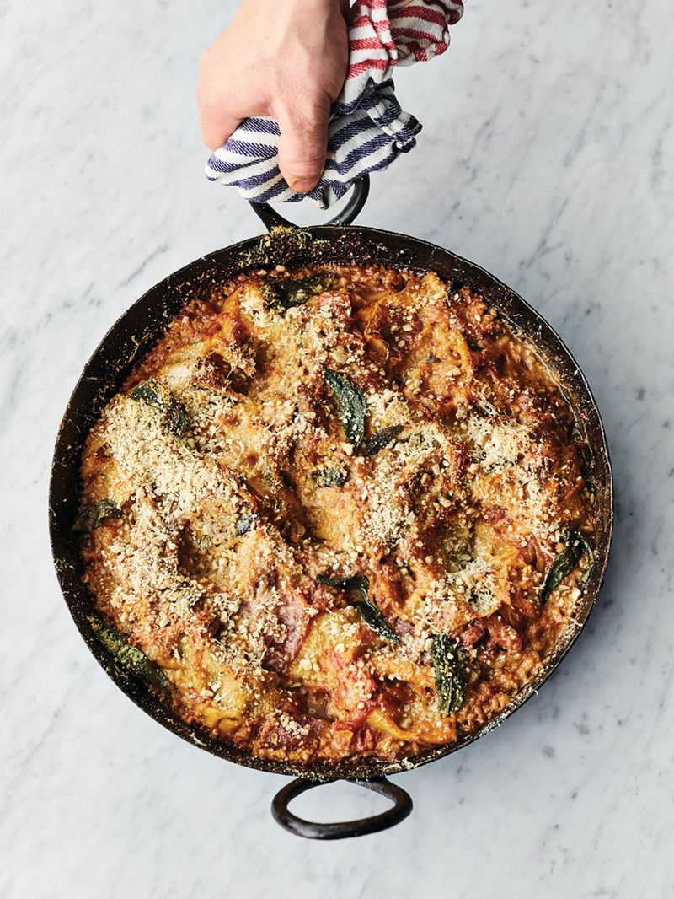

Jamie Oliver's Scruffy aubergine lasagne

“Bringing together two big hitters – aubergine and lasagne – this recipe is guaranteed to make you smile. It’s cheesy, oozy and mega delicious, plus it’s really fun to make. First I steam the aubergine, to make it soft, silky and a total pleasure to eat, then I crisp it up with garlic, chilli, sage and lemon for added flavour, before turning it into the most scrumptious sauce. Enjoy! ”
--Jamie Oliver
Ingredients:
- 3 x 400 g aubergines
- 3 onions
- 6 cloves of garlic
- 1 bunch of fresh sage , (30g)
- olive oil
- 1 teaspoon dried chilli flakes
- 1 lemon
- 2 x 400 g tins of quality plum tomatoes
- 80 g mature Cheddar cheese
- 80 g Parmesan cheese
- 300 g fresh lasagne sheets
- 50 g blanched almonds
Instructions:
- Place a large shallow casserole pan on a medium heat with 250ml of water.
- Prick the whole aubergines all over with a fork, halve lengthways and place in the pan. Peel, quarter and add the onions, then cover with a lid and cook for 20 minutes.
- Meanwhile, peel and finely slice the garlic, and pick the sage leaves.
- Preheat the oven to 200ºC/400ºF/gas 6.
- Remove the lid, and once most of the liquid has cooked away, make a well in the middle. Add 3 tablespoons of oil, the garlic, chilli flakes and most of the sage leaves, then finely grate in the lemon zest. Once golden, scrunch in the tomatoes, pour in 2 tins' worth of water, and simmer for 20 minutes, stirring occasionally.
- Remove the pan from the heat, grate in the cheeses, then season to absolute perfection with sea salt and black pepper.
- Tear in the pasta sheets and mix up really well to coat and separate, then pull some of the sheets to the top to create a top layer.
- Bash the almonds until fine and rub the remaining sage leaves with oil, then sprinkle on top.
- Use the back of a spoon to create some dips and wells, and bake for 25 minutes, or until golden and bubbling. I love this served with a big crunchy green salad dressed with balsamic vinegar.
Home